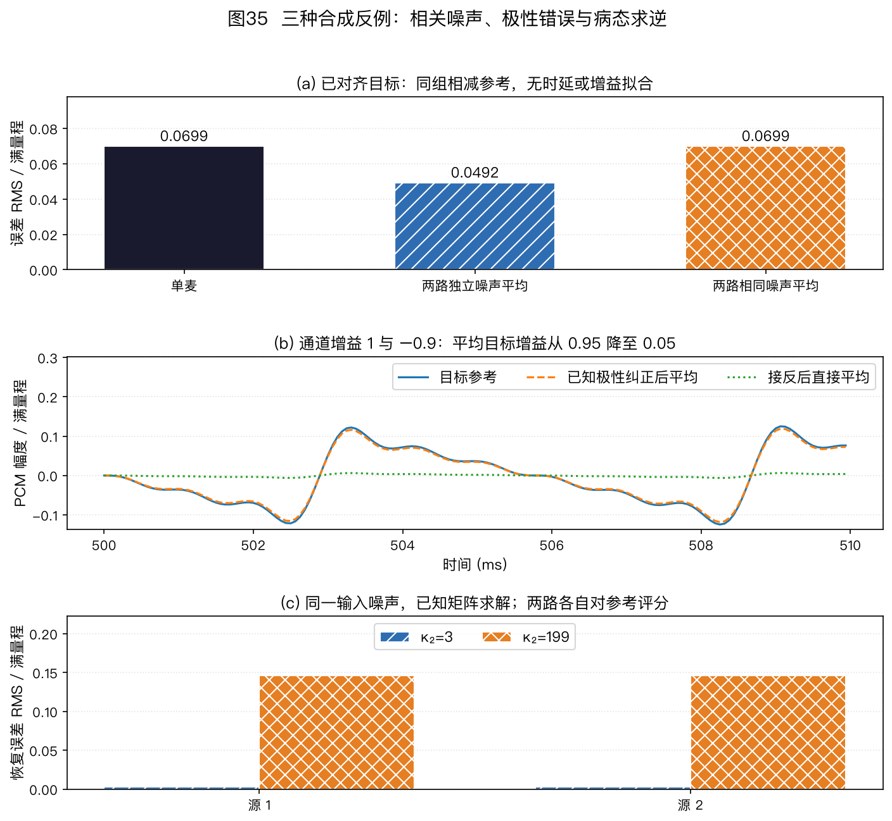

本页目录
⚠️ 本篇是附录 B（正文共 11 章，另有附录 A/B），可独立查阅，前后篇见下方导航。
🏠 首页导读：🏠 导读与导航 ｜ 上一篇：附录 A · 符号术语数学 ｜ 下一篇：（无）
附录 B：学习路径、领域地图、排错、练习与复现
13.1 研究生学习路径
下面的阅读与实验顺序从经典模型开始，再过渡到公开基线、数据集和硬件实验。
- 基础阅读：Van Veen & Buckley, Beamforming: A Versatile Approach to Spatial Filtering（IEEE ASSP Mag. 1988）；Krim & Viberg, Two Decades of Array Signal Processing（IEEE SPM 1996）。
- 语音场景：Kumatani et al., Microphone Array Processing for Distant Speech Recognition；Gannot et al., A Consolidated Perspective on Multimicrophone Speech Enhancement and Source Separation（IEEE/ACM TASLP 2017）。
- 原始论文：Capon（1969）、Griffiths & Jim GSC（1982，An Alternative Approach to Linearly Constrained Adaptive Beamforming, IEEE Trans. Antennas Propag. 30(1):27–34）、Schmidt MUSIC（1986）、Roy & Kailath ESPRIT（1989）、Allen & Berkley 镜像法（1979）、Nakatani et al. WPE（IEEE TASLP 2010）、Pal & Vaidyanathan 嵌套阵（IEEE TSP 2010）。
- 回声消除：Hänsler & Schmidt, Acoustic Echo and Noise Control（Wiley 2004）；近年进展看 ICASSP AEC Challenge 系列报告。
- DNN 方向：Chakrabarty & Habets（IEEE JSTSP 2019）、Gu et al. 全神经波束形成（IEEE/ACM TASLP, vol.31, pp.849–862, DOI 10.1109/TASLP.2022.3229261）。
- 实验顺序：先运行
codes/中只依赖 NumPy 的教学实现，核对手算、数组维度和边界；再用 pyroomacoustics 验证 DSB、MVDR、MUSIC 和 SRP-PHAT 基线；运行scripts/中的两个绘图脚本，复现 39 张图；随后选择与研究任务匹配的公开数据和固定版本参考系统；最后在可用的多通道硬件上验证实时性、同步和标定。数据集、框架和硬件只是候选工具，应根据任务与许可证选择。
13.2 领域地图：教材、会议、期刊与挑战赛
本节按教材、会议、期刊、挑战赛和历史脉络组织，可按需要查阅。
教材与专著（由浅到深）：
| 书 | 特点 |
|---|---|
| Benesty, Chen & Huang, Microphone Array Signal Processing（Springer 2008） | 覆盖阵列模型、定位、波束形成与多通道增强 |
| Brandstein & Ward (eds.), Microphone Arrays: Signal Processing Techniques and Applications（Springer 2001） | 经典论文式合集，各章由领域奠基人撰写 |
| Tashev, Sound Capture and Processing: Practical Approaches（Wiley 2009） | 从工程视角讨论捕获链路、器件和实现权衡 |
| Johnson & Dudgeon, Array Signal Processing: Concepts and Techniques（Prentice Hall 1993） | 通用阵列信号处理经典（雷达/声呐同源理论） |
| Van Trees, Optimum Array Processing（Wiley 2002） | 系统推导最优阵列处理，适合查阅数学细节 |
| Vincent, Virtanen & Gannot (eds.), Audio Source Separation and Speech Enhancement（Wiley 2018） | 分离与增强方向的现代合集 |
| Rafaely, Fundamentals of Spherical Array Processing（Springer，一版2015，DOI 10.1007/978-3-662-45664-4；二版 online 2018、版权2019，DOI 10.1007/978-3-319-99561-8） | 系统介绍球阵与球谐域处理，可配合 §5.8 阅读 |
会议：ICASSP（信号处理旗舰会）、Interspeech（语音领域旗舰会）、WASPAA（音频与声学信号处理研讨会，两年一届）、IWAENC（声学信号增强研讨会）、HSCMA（免提语音通信与麦克风阵列研讨会）、DCASE Workshop（声事件与场景）。
期刊：IEEE/ACM Transactions on Audio, Speech, and Language Processing（TASLP，本领域主刊）、IEEE JSTSP（信号处理选题特刊）、JASA（美国声学学会刊）、Speech Communication。
挑战赛用于了解公开任务和评测口径。
CHiME 覆盖远场、多说话人和多通道语音处理；CHiME-9 设置 MCoRec 多会话鸡尾酒会转写与会话聚类、ECHI 低延迟助听对话增强。CHiME 官方于 2026 年 7 月公布 CHiME-10 的 ECHI-2、URGENT、SG-TSE 三项任务；挑战计划于 2027 年 2 月 4 日开放，提交期暂定为 2027 年 8～9 月。日程可能调整，参赛时应以官方页面为准。
DCASE 2026 已于 2026 年 6 月 15 日结束，并在 7 月 1 日公布结果；Task 3 是 Semantic Acoustic Imaging SELD，与 DCASE 2024 Task 3 的距离估计设置不同。以上状态核实于 2026 年 9 月，任务定义与结果见 DCASE 2026 官方页面和结果公告。
其他公开评测包括 REVERB 去混响评测、ICASSP DNS/AEC Challenge，以及已结束的 SPEAR Challenge 2023。SPEAR 使用头戴式 6 通道设备研究 AR 语音增强；它的年份、阵列和任务条件不应外推为当前持续榜单。
历史脉络（本领域是雷达/声呐技术向语音的迁移史）：
| 年代 | 里程碑 |
|---|---|
| 1940s–60s | 雷达/声呐阵列处理奠基（Bartlett 波束扫描） |
| 1969 | Capon 最小方差谱估计（为地震学阵列而做） |
| 1972 | Frost 时域约束自适应波束形成 |
| 1979–82 | Allen & Berkley 镜像法房间仿真；Griffiths & Jim 提出 GSC |
| 1985 | Flanagan 等报告了可计算转向的大孔径会议室麦克风阵列 |
| 1986–89 | MUSIC（1986）与 ESPRIT（1989）用子空间结构估计到达方向；分辨能力仍受孔径、信噪比、快拍数和模型失配限制 |
| 1990s | Elko 差分麦克风阵列进入助听器与桌面会议设备 |
| 2001–08 | Brandstein & Ward、Benesty 等教材出版，语音阵列知识体系化 |
| 2010 | Nakatani 提出 WPE 去混响；Pal & Vaidyanathan 提出嵌套阵 |
| 2011 | 首届 CHiME 挑战赛，远场语音成为公开评测对象 |
| 2014 | Amazon Echo 把多麦克风远场语音带入一类消费设备；具体阵列规格随硬件代次而变 |
| 2015–18 | CHiME-3/4/5 的公开任务推动了掩码辅助波束与 GSS 等方法的可复现比较 |
| 2019–24 | DNN 定位/追踪（ACCDOA：声源活动与方向联合输出，Shimada et al., ICASSP 2021）、端到端一体化；CHiME-7/8 大模型后端；STARSS23（DCASE 2024 Task 3 使用的开发与评测数据集）支持声源距离估计子任务 |
| 2025–26 | CHiME-9 设置 MCoRec 与 ECHI；2026 年 7 月公布 CHiME-10 三项任务；DCASE 2026 Task 3 转为 Semantic Acoustic Imaging SELD，并于 2026 年 7 月公布挑战结果 |
DCASE 2024 Task 3 的官方任务页明确将开发集和评测集称为 STARSS23，数据集名中的年份不应随挑战年份改写。DCASE 2024 Task 3 官方说明
13.3 研究前沿速览（2024—）
本节把正文中的经典方法与 2024 年以来若干公开研究方向相连。具体成绩只在原论文的数据、实现和评测条件下成立；带日程的内容以对应挑战赛官方页面为准。
-
预训练模型用作远场识别后端：CHiME-7/8（2023/2024）部分参赛系统使用 Whisper、WavLM 等预训练模型作为识别后端，也有系统保留 GSS（导引源分离，详见 §8.1）和解析波束。这些参赛系统只能说明相应架构在该届数据和评测中被实现，不能据此断言整个领域已转向某一种架构。CHiME-7/8 综述预印本，arXiv:2507.18161
-
阵列无关（array-agnostic）系统：CHiME-8 的 DASR 系统报告描述了不固定阵列拓扑的设计。其泛化范围只能以报告中的训练阵列、测试设备、任务和打分脚本为边界。CHiME-8 DASR
-
目标说话人提取（Target Speaker Extraction，TSE）：系统用注册语音、视觉或方向提示描述目标说话人，再从混合语音中提取相应音轨。AR 眼镜阵列和手机结构辅助方向提取提供了不同的条件输入形式。
TEA-PSE（ICASSP 2022，DOI 10.1109/ICASSP43922.2022.9747765；后续版本 arXiv:2303.07704）和 CIENet 使用注册语音提供说话人条件，再通过条件注入或帧级对齐提取目标。
SonicSieve 采用另一种线索：被动声学微结构改变方向相关响应，让神经网络利用方向特征提取语音，不是由注册声纹指定身份。它依赖对应的声学结构与训练数据，不能当作任意手机加软件即可获得的效果。原论文为 CHI 2026；本书仅说明方法条件，不转引摘要中的性能数字。作者机构项目页、作者论文 v3，2026-02-11，摘要与方法部分（核实：2026-09-22）。
§6.1.6 的个性化 AEC 与这类条件提取方法相关，但训练目标和回声参考结构仍需分别定义。
-
生成式语音增强与推理加速：SGMSE+（Richter et al., IEEE/ACM TASLP 2023）在复数 STFT 域使用基于随机微分方程的扩散模型；StoRM（Lemercier et al., IEEE/ACM TASLP 2023）把判别式回归与生成过程结合，以减少采样负担。SGMSE+ 代码与论文、StoRM 代码与论文。
这类方法可能改善特定数据上的感知质量，也可能生成参考中不存在的语音细节，因此要同时评估听感、内容一致性和下游 WER。流匹配、蒸馏和一致性模型试图减少采样步数。
FlowSep（ICASSP 2025）把整流流用于 VAE 隐空间中的文本查询通用音频分离，其结论不能直接外推到多通道语音增强。FlowSep, DOI 10.1109/ICASSP49660.2025.10890129
多通道生成模型还需显式处理跨通道相位、空间协方差和实时性，目前与 §5.9 的掩码加解析波束属于不同成熟度的技术路线。
-
TF-GridNet 与复数谱映射骨干：TF-GridNet 的单通道会议版（Wang et al., ICASSP 2023）研究单通道说话人分离；期刊扩展（IEEE/ACM TASLP 2023）进一步覆盖噪声、混响和多通道条件。具体 SI-SDRi 必须按原文的数据版本、混合方式和表号引用，不能把两版结果混在一起。ICASSP 2023 单通道会议版、TASLP 2023 期刊扩展。
-
几何无关前端的期刊研究：Kamo et al. 在 Computer Speech & Language 95:101820（2026）中整理了几何无关的多说话人远场识别系统，并在真实会议数据上评估。Kamo et al., Computer Speech & Language 它与 CHiME-8 的系统共同说明，不固定阵列拓扑可以作为明确的系统设计目标；泛化范围仍以论文的训练阵列、测试设备和数据为边界。
-
CHiME-9 与大模型后端：CHiME-9 设置 MCoRec 和 ECHI 两项任务；前者涉及多会话转写与会话聚类，后者研究低延迟助听对话增强。CHiME-9 官网
DiCoW（Polok et al., Computer Speech & Language 95:101841，2026）把分割信息作为条件注入 Whisper，用于目标说话人识别。这个实例说明前端的分割、增强结果可以作为大模型后端的显式条件，而不只是输出单路音频。DiCoW, DOI 10.1016/j.csl.2025.101841
-
扩散先验用于无监督盲分离：ArrayDPS（Xu et al., ICML 2025）处理“没有阵列几何、房间冲激响应和配对分离标签”的多通道盲分离问题。AuxIVA 通过源独立性直接迭代解混矩阵；ArrayDPS 改为从单说话人扩散先验采样，并在每个采样步骤内估计相对房间冲激响应，用该近似混合模型计算似然梯度。
它仍假设说话人数已知、各通道同步、混合可由卷积模型近似，而且单说话人先验要覆盖测试语音域；扩散先验不能替代源数估计、同步或域外验证。
最小复现可沿用官方 SMS-WSJ 配置：两名说话人、3 通道、8 kHz，先下载作者提供的单说话人扩散模型，再运行
separate.py，设置num_speakers=2、n_channels=3、num_steps=400，将输出与其 IVA 初始化按同一 SI-SDR 实现比较，同时记录总耗时和峰值显存。官方说明要求显存大于 7 GB；400 步扩散采样还嵌套相对 RIR 优化，因此它是离线研究候选，不应直接列入低延迟流式基线。ArrayDPS 论文（PMLR 267）、官方实现与复现命令。
专栏：神经网络前端的泛化失配与四类对策
本专栏解释阵列或房间改变后性能下降的原因，并展开 13.3 第 2、6 条涉及的四类对策。
神经网络前端可能在训练阵列和房间上表现良好，换到新的几何、声学条件或任务后却明显退化，这就是泛化失配。下面把失配分为阵列、声学、任务与数据三类，再从数据、表示、训练和部署四方面讨论缓解方法。
失配三源：
- 阵列失配：训练与部署的几何、通道数、麦克风一致性或采样时钟不同。若网络依赖固定通道编号及其相位关系，更换阵列后这些特征不再成立，端到端波束尤其容易受影响（§5.9 第 2 条）。
- 声学失配：混响时间、噪声类型和说话人距离改变。训练数据未覆盖相应混响尾部或噪声结构时，掩码估计误差会传递到协方差和 MVDR 权重。
- 任务与数据失配：仿真未包含麦位误差、挡板散射或非平坦频响；训练与测试的语言不同；面向听感训练的增强模型被直接用于 ASR。最后一种情况还要检查生成式模型是否改变语音内容（§13.3 第 4 条）。
四类对策：
- 数据：混合多种阵列几何、房间、采样率和噪声进行训练，并用少量目标设备录音适配。目标是覆盖可能变化的相位和幅度关系，而不是穷举设备。
- 表示：让网络输出掩码、协方差或说话人活动等中间量，再由 MVDR 或 GSS 等解析方法施加无失真约束（§5.9 第 1 条）。这种分工仍需验证中间量是否真正跨几何泛化。
- 训练：随机丢弃通道、置换通道顺序并扰动麦克风坐标，分别模拟通道失效、可变麦数和标定误差；网络结构还要满足相应的置换不变或等变性质。
- 部署：先做通道一致性和几何标定，再根据置信度、资源和失败模式选择模型或解析基线。模型分级只是候选架构，是否有净收益要在目标硬件上测量。
阵列无关系统的常见结构：各通道先独立提取特征，再用注意力或池化聚合成对通道顺序不敏感、可接受可变通道数的表示。中间量可选掩码、协方差或说话人活动；分离与波束部分采用 GSS 等解析方法，或使用满足几何无关要求的神经前端。后端再用预训练识别模型吸收残余失配。
CHiME-8 DASR 与 §13.3 第 6 条的期刊系统给出了两类公开实例。复现时应画出实际流程图，并逐项标明训练数据、通道聚合方式、解析约束和测试阵列范围。
TAC 与 VarArray。TAC（Transform-Average-Concatenate）先对各通道独立变换，再跨通道平均并把聚合结果拼回各通道，从结构上支持可变通道数和通道置换。
VarArray 把 TAC、Conformer 分离和通道间相位差特征用于几何无关的连续语音分离，并在 AMI 会议转写上报告端到端 sa-WER 结果。它们为后续跨设备系统提供了结构基础。VarArray, ICASSP 2022, DOI 10.1109/ICASSP43922.2022.9746876
13.4 常见问题与调试指南
下面按“现象 → 优先检查项”列出八类常见问题。
-
MUSIC 没有峰 / 峰位置不稳定 → 先看样本协方差的秩与条件数。若直接用 $T$ 个 $M$ 维快照计算未中心二阶矩，矩阵秩不超过 $T$，所以 $T\lt M$ 时必然奇异；若先估计并减去样本均值，中心化后的 $T$ 个向量线性和为零，秩上限通常降为 $T-1$，所以 $T\le M$ 时必然奇异。快照数超过这一最低门槛也不代表估计已经稳定。
再检查源数 $K$ 和噪声底是否可分，最后检查直达声与反射是否强相干。空间平滑只适用于具有可分重叠子阵的几何，而且会缩短有效孔径；它不是所有混响场景的必选项（§2.5、§4.6）。
-
GCC-PHAT 峰位置在离散时延格点间跳变 → 没有做亚采样时延估计，或原始时延网格太粗；也可能是强反射峰超过直达峰（图13）。图12采用 16 倍互谱补零插值，不是三点抛物线拟合；其他实现也可采用相关峰插值或相位斜率拟合（§4.2）。
-
波束形成后目标语音反而失真 → 先查 DOA、RTF 和通道标定是否一致，再检查噪声协方差的估计方式。
噪声协方差既可由目标缺席帧估计，也可由时频掩码加权估计；关键是尽量排除目标泄漏，同时保留足够有效快拍。混响中还要确认约束对象是否应改用 RTF（§5.4、§5.9）。
-
超指向输出噪声很大 → 检查 WNG、协方差条件数、通道增益相位和阵列流形误差。容许的失配没有统一 dB 门槛，应从目标 WNG、最高工作频率和实测波束图反推；可用对角加载或显式 WNG 约束改善稳健性（§5.3、§5.4）。
-
AEC 残余回声较大 → 优先检查参考取点、参考与麦克风的整体延迟、扬声器削波以及滤波器覆盖时间。参考不同步是需要排查的原因之一，不是所有设备的固定首因。
若线性路径已收敛而仍有与播放相关的非线性残余，再评估非线性处理（NLP）或学习型 AEC（§6.1）。
-
SRP-PHAT 出现镜像假峰：先区分三种原因，不能把所有对称峰都归于麦间距。
- 几何不可辨识：线阵可能存在前后或锥面歧义，平面阵可能存在上下镜像；增加频带未必能消除相同 TDOA，见 §3.1。
- 空间混叠：检查工作频率、间距与转向；超过半波长失去全视场无混叠保证，但并非每个方向必然出现等高栅瓣，见 §2.6 和本附录练习 2。
- 多径反射：强反射可能形成镜像声源峰，应结合直达声可见性、搜索区域与房间条件判断。限制搜索空间需要明确的场景先验，不能仅为删除不喜欢的峰。
-
多麦录音各通道逐渐错位 → 先区分固定的初始时差、独立丢样和 SRO。单设备可让通道共享采样时钟；分布式设备无法共享时钟时，要估计相对采样率并重采样。PDM/TDM 是接口形式，不自动保证跨设备同步（§10.2）。
-
仿真很好、实测很差 → 逐项加入麦位误差、通道增益相位误差、壳体散射、频响差异、时钟偏移和扬声器非线性，寻找哪一项能复现实测退化。
位置容差应按最高频率允许的相位误差换算，不存在对所有阵列通用的毫米阈值。完成标定后，再在容差范围和多个位置上复测。
13.5 核心公式速查卡
下表汇总正文中的关键公式，便于复习和查阅。公式成立条件仍以对应章节为准。
| 公式 | 含义 | 章节 |
|---|---|---|
| $10\log_{10}M$ | 无失真归一化、各通道独立等功率白噪声下，$M$ 元 DSB 的 WNG（dB） | §1、§5.2 |
| $r_F=2D^2/\lambda$ | Fraunhofer 相位曲率检查尺度；不是远近场硬分界。使用平面波模型还要检查 $r\gg D$、阵元幅度差和允许的相位误差 | §2.2 |
| $T_{60} = 0.161V/A$ | 赛宾公式：房间混响时间 | §2.4 |
| $d_c = 0.057\sqrt{QV/T_{60}}$ | 临界距离：直达/混响相等处；$Q$ 为声源指向因子，$Q=1$ 时才化为原来的全向式 | §2.4 |
| $\vec{x} = \vec{a}(\theta)s + \vec{n}$ | 远场窄带阵列信号模型 | §2.3 |
| $\hat{\mathbf{R}} = \frac{1}{T}\sum_t \vec{x}\vec{x}^H$ | 空间协方差矩阵估计 | §2.5 |
| $d \lt \lambda/2$ | ULA 在整个闭可视角域内避免端点歧义的充分条件；$d=\lambda/2$ 时两个端火方向 $-90^\circ$ 与 $+90^\circ$ 可产生相同阵元采样，限定转向范围时可另行分析 | §2.6 |
| CRB 公式 | 给定统计模型与正则条件下，无偏 DOA 估计方差的下界 | §2.6 |
| $\hat\theta = \arcsin(c\hat\tau_{12}/d)$ | 双麦时延差 → 角度；本书定义 $\tau_{12}=t_1-t_2$，并以 $X_1X_2^*$ 的 GCC 峰估计它 | §2.1、§4.2 |
| $R(\tau)=\int \Phi X_1X_2^* e^{j2\pi f\tau}df$ | GCC 加权互相关 | §4.2 |
| $\hat{\vec{p}} = \arg\max_{\vec{r}} \sum R^{PHAT}$ | SRP-PHAT 全阵列投票 | §4.3 |
| $P_C = 1/(\vec{a}^H\hat{\mathbf{R}}^{-1}\vec{a})$ | Capon 谱 | §4.5 |
| $P_{MU} = 1/(\vec{a}^H\mathbf{E}_n\mathbf{E}_n^H\vec{a})$ | MUSIC 伪谱 | §4.6 |
| $\vec{w}_{DSB} = \vec{a}/M$ | 延迟求和波束 | §5.2 |
| $\lvert B(\theta)\rvert = \left\lvert\frac{\sin(M\psi/2)}{M\sin(\psi/2)}\right\rvert$ | 等权 ULA 的归一化阵因子，$\psi=2\pi d(\sin\theta-\sin\theta_0)/\lambda$ | §5.2 |
| $\vec{w}_{SD}=\dfrac{\mathbf{\Gamma}^{-1}\vec{a}}{\vec{a}^H\mathbf{\Gamma}^{-1}\vec{a}}$ | 超指向：在无失真约束下最小化弥散噪声输出 | §5.3 |
| $\vec{w}_{MVDR} = \mathbf{R}_{nn}^{-1}\vec{a}/(\vec{a}^H\mathbf{R}_{nn}^{-1}\vec{a})$ | 最小方差无失真 | §5.4 |
| $\vec{w}_{LCMV}=\mathbf{R}^{-1}\mathbf{C}(\mathbf{C}^H\mathbf{R}^{-1}\mathbf{C})^{-1}\vec{f}$ | 多约束最小方差解 | §5.5 |
| $\vec{w}_{SDW} = (\mathbf{R}_{ss}{+}\mu\mathbf{R}_{nn})^{-1}\mathbf{R}_{ss}\vec{e}_r$ | 失真可调维纳滤波 | §5.5 |
| $e=d-y$ | GSC 中固定波束输出 $d$ 减去自适应抵消输出 $y$；在阻塞矩阵理想、支路自由度足够且优化收敛时与相应 LCMV 等价 | §5.6 |
| NLMS 更新式 | AEC 自适应滤波 | §6.1 |
| $\mathrm{ERLE}=10\log_{10}\dfrac{\sum_n|y(n)|^2}{\sum_n|e_{\mathrm{echo}}(n)|^2}$ | 同一远端单讲窗口内的回声返回损失增强；$y=x*h$ 为消除前回声，$e_{\mathrm{echo}}$ 为消除后回声分量 | §6.1 |
| $X(n,f)=E(n,f)+\sum_{k=\Delta}^{\Delta+K-1}G^*(k,f)X(n-k,f)$ | 单通道记法下的 WPE 预测模型；多通道时 $G$ 与历史观测为向量 | §7.1 |
| KF 五步 | 预测-更新-增益循环；圆周角新息先做 wrap，浮点实现可用 Joseph 协方差更新 | §9.2 |
PHD 预测，见式(9-9)：新生目标强度加存活目标的状态转移。
$$\begin{aligned} D_{t\vert t-1}(\vec x)&=\gamma_t(\vec x)\\ &\quad+\int p_S(\vec\xi)f_{t\vert t-1}(\vec x\mid\vec\xi)D_{t-1}(\vec\xi)\,d\vec\xi. \end{aligned}$$
PHD 更新，见式(9-10)：漏检项加每条观测的“目标/杂波”归一化贡献。
$$\begin{aligned} D_t&=(1-p_D)D^-\\ &\quad+\sum_{z\in Z_t}\dfrac{p_Dg(z\mid x)D^-}{\kappa(z)+\int p_Dg(z\mid\xi)D^-(\xi)d\xi}. \end{aligned}$$
13.6 思考与练习
练习按章节排列。修改脚本参数时，应同时记录随机种子、实验条件和输出指标。数值题附参考答案，综合题附思路提示。
练习涉及的绘图函数：先阅读参数与生成模型。需要改参数时，在个人实验副本中运行并保存到独立输出目录，不直接覆盖本书的出版插图。
| 函数名 | 它画的是什么 | 用在哪道题 |
|---|---|---|
fig_geometries |
阵列形态布局 | 题4 |
fig_gcc_phat |
GCC-PHAT 原理 | 题5 |
fig_doa_spectrum |
DOA 空间谱 | 题6 |
fig_wng_di |
WNG–DI 权衡 | 题8 |
fig_wpe |
WPE 去混响 | 题9 |
fig_tracking |
粒子滤波追踪 | 题13 |
动手题用的绘图函数都在 scripts/ 里，具体对应关系见上表。第 16 题还要安装 pyroomacoustics 0.10.0；它是房间声学仿真的扩展依赖，命令见该题和项目 README。
章内还有带稳定编号 E01-01 等的计算练习，由练习与音频实验手册统一索引。附录原有题号仍用于下面的 1～17 题；不要把两个编号系统按顺序相加。工程练习 E10、选型练习 E11 和数学练习 E12 的运行入口是 codes/examples/exercises_engineering.py，可先手算再比对输出。
第 1 章（问题定义）
-
思考题：为什么“双耳 + 自由转头”通常比静止双耳更容易消除前后混淆？
提示：静止时并非只有两个数；ITD、ILD 和 HRTF 的频谱线索都随频率变化。某些镜像方向仍会产生相近线索，转头后这些线索按不同轨迹变化，动态观测可打破歧义。联系 §1.1 与 §3.1 的几何对称性。
第 2 章（基础）
-
手算：3 麦线阵、间距 3 cm、声源 45°、频率 2 kHz，写出导向矢量；该频率是否满足全视场无混叠条件？6 kHz 呢？
参考答案：2 kHz 时 $\lambda=17.15$ cm，$\psi=\frac{2\pi d}{\lambda}\sin45°\approx0.777$ rad，$\vec{a}=[1,\ e^{+\mathrm{j}0.777},\ e^{+\mathrm{j}1.554}]^\top$；正角声源先到达 $+x$ 侧的后续阵元，按本书的傅里叶变换约定对应正的相对相位。$d\lt \lambda/2$，满足全视场安全条件。
6 kHz 时 $\lambda\approx5.72$ cm，$d>\lambda/2$，不再保证所有方向无混叠。但对本题 $\theta_0=45°$，候选歧义满足 $\sin\theta=\sin45°\pm\lambda/d\approx0.707\pm1.91$，两解都落在 $[-1,1]$ 外，因此该转向本身没有可见等高栅瓣。条件被突破不等于每个转向都必然出现栅瓣。
-
用赛宾公式估算你所在房间的 $T_{60}$ 与临界距离 $d_c$，判断 3 m 对话处在直达占优还是混响占优区。
参考示例：5 m × 4 m × 2.8 m 客厅，$V=56$ m³、$A\approx18$ m²（取平均吸声系数约 0.2） → $T_{60}=0.161V/A\approx0.5$ s。若声源指向因子 $Q=1$，则 $d_c=0.057\sqrt{QV/T_{60}}\approx0.6$ m；3 m 对话距离 $\gg d_c$，在该模型下属于混响占优区。改变 $Q$ 会按 $\sqrt Q$ 改变临界距离。
第 3 章（几何）
-
打开
fig_geometries按题面改：把 6+1 圆环改成 8 麦；改麦数时坐标、标题、图注要一起改。思考：中心麦能提供什么新信息？提示：它可作为参考通道，并新增从中心到各环麦的基线；“到各环麦距离相等”描述的是几何布局，不表示任意入射方向下都与环麦等相位。固定半径时增加环上麦数会缩短相邻间距，但不会增加最大孔径。
第 4 章（定位）
-
打开
fig_gcc_phat，逐步增加噪声并比较 PHAT 与普通互相关。记录每个随机种子、信号谱和混响条件下的峰值误差，不预设固定 SNR 崩溃点。提示：PHAT 去掉幅度谱着色，可能让峰变尖，也可能在低信噪比频带放大相位噪声。它的优势取决于源谱、噪声谱和反射结构。
-
在
fig_doa_spectrum()中把两源间隔从 50° 缩到 15°、8°，观察 Bartlett、Capon、MUSIC 的谱峰。比较基准：8 元半波 ULA 的离散阵因子 HPBW 近似为 $0.886\lambda/(Md)\approx12.7°$；用物理跨度 $D=(M-1)d=3.5\lambda$ 得到的 $\lambda/D\approx16.4°$ 只是孔径尺度。
不要预先规定谁在某个角度必然失败。实际结果取决于 SNR、快拍数、源相关性、加载和峰值判据。MUSIC 在理想独立源条件下可能分辨小于常规主瓣宽度的两源，但不保证在失配或相干源下保持这一能力。
第 5 章（波束形成）
-
从拉格朗日函数推出 MVDR 闭式解，再回 §5.4 对答案。
提示：构造实值函数 $L=\vec{w}^H\mathbf{R}_{nn}\vec{w}+2\operatorname{Re}\{\lambda^*(\vec{w}^H\vec{a}-1)\}$，对 $\vec{w}^*$ 求导，得到 $\vec{w}\propto\mathbf{R}_{nn}^{-1}\vec{a}$，再代入约束定比例系数。
-
在
fig_wng_di()中把麦距从 4 cm 改成 2 cm 与 8 cm，画出 WNG、DI 和协方差条件数，再比较有无对角加载。记录脚本实际输出，不预设某个频率的固定 dB 数。解释重点：低频 $kd$ 很小时，各阵元观测接近相同，弥散噪声相干矩阵容易病态；超指向解需要大幅度、相互抵消的权重，因而 WNG 下降。增大间距可能改善低频条件数，也可能在高频引入空间混叠，不能只看一端。
第 7 章（去混响）
-
打开
fig_wpe按题面修改：把 $T_{60}$ 从 0.6 s 改为 0.3 s 与 1.0 s，再把prediction_delay从 6 改为 1，其他参数保持prediction_order=10、iters=3。记录每次试验的参数，比较图中拖尾与语音谱结构的变化。提示：当前
wpe_past_frames要求delay>=1，因此delay=0会报错，不是可比较的算法配置。8 ms 帧移时，delay=6从 48 ms 历史开始预测，delay=1则从 8 ms 开始，更容易将需保留的早期成分纳入预测。
第 6 章（AEC）
-
手算（AEC，接算例 6-1）：回声路径 $\vec{h}=[0.8,\ 0.3,\ 0.1]^\top$，参考为单位脉冲 $x(0)=1$、其余时刻为 0；3 抽头 NLMS，$\hat{\vec{w}}(0)=\vec{0}$，$\mu=0.5$。在 $\|\vec{x}\|^2>0$ 时为便于手算取 $\varepsilon=0$；零能量时按 §6.1.2 的规则跳过更新。手算 $n=0,1,2,3$ 的 $d(n)$、$e(n)$ 与 $\hat{\vec{w}}(n+1)$，并解释为什么 3 步之后滤波器恰好停在 $0.5\vec{h}$。
参考答案：$d=[0.8,\ 0.3,\ 0.1,\ 0]$，因为单位脉冲卷上 $\vec{h}$ 就是 $\vec{h}$ 本身。
- $n=0$：$\vec{x}=[1,0,0]^\top$，$\hat y=0$，$e=0.8$，$\|\vec{x}\|^2=1$，$\hat{\vec{w}}\leftarrow[0.4,\ 0,\ 0]^\top$；
- $n=1$：$\vec{x}=[0,1,0]^\top$，$\hat y=0$，$e=0.3$，$\hat{\vec{w}}\leftarrow[0.4,\ 0.15,\ 0]^\top$；
- $n=2$：$\vec{x}=[0,0,1]^\top$，$e=0.1$，$\hat{\vec{w}}\leftarrow[0.4,\ 0.15,\ 0.05]^\top$；
- $n=3$：$\vec{x}=\vec{0}$，按零能量规则跳过更新。
前三个回归向量已经依次覆盖三个正交方向，但每个方向只更新一次；$\mu=0.5$ 使每个抽头只走完一半误差，所以终点恰为 $0.5\vec{h}$。若要继续收敛到 $\vec{h}$，需要在这些方向上获得更多非零更新；持续的白噪声或语音通常同时提供重复观测和多方向激励。
-
论述题：为什么多数时变波束系统把 AEC 放在波束形成之前？有没有例外？
思路提示：若权重随追踪变化，波束后的等效回声路径 $h_{\mathrm{eff}}(t)=\vec{w}(t)^H\vec{h}(t)$ 也随时间变化，单路 AEC 更难跟踪。若波束固定或采用联合多通道回声模型，波束后 AEC 并非数学上不可能，只是路径变化、双讲控制和多波束复用要重新设计。
第 8 章（语音分离）
-
手算与设计题：
- 某两输出分离器对两条参考语音的损失矩阵为 $\begin{bmatrix}1.2&0.3\\0.4&1.5\end{bmatrix}$，求 PIT 选择的排列与总损失。
- 取两个双通道时频快照 $\mathbf X_1=[1,1]^\top$、$\mathbf X_2=[1,-1]^\top$，目标掩码 $\gamma=[0.75,0.25]$，计算目标协方差和互补掩码协方差。
- 若把模型用于连续会议，还要增加哪三类处理？
参考答案：
- 保持排列的损失为 $1.2+1.5=2.7$，交换排列为 $0.3+0.4=0.7$，故选择交换。
- 两组权重和都为 1，$\mathbf R_{\mathrm{tar}}=0.75\mathbf X_1\mathbf X_1^H+0.25\mathbf X_2\mathbf X_2^H=\begin{bmatrix}1&0.5\\0.5&1\end{bmatrix}$，互补掩码得到 $\mathbf R_{\mathrm{int}}=\begin{bmatrix}1&-0.5\\-0.5&1\end{bmatrix}$。
- 连续会议至少要定义分块与上下文、重叠块拼接、跨块排列/输出流管理；需要身份时还要增加分割或说话人关联。
互补掩码在这个二分类题中成立，不能据此把多说话人加噪声场景中的 $1-\gamma$ 一律称为纯噪声。
第 9 章（追踪）
-
打开
fig_tracking，按下面的条件修改：- 当前基线：200 个粒子、$7^\circ$ 观测噪声、“高斯目标 + 均匀杂波”混合似然（杂波权重 0.1）、第 48～57 帧连续缺测、$0°～120°$ 有限搜索扇区的镜面反射边界，以及有效粒子数低于 $N/2$ 时的系统重采样；
- 实验变量：把生成观测的标准差和
particle_filter_doa(..., observation_std=...)同时从 7° 改为 20°，分别用 $N=200,500,1000$ 运行； - 其余保持不变：杂波权重、缺测区间、有限扇区边界和系统重采样阈值沿用当前基线；
- 要记录：轨迹 RMSE、
n_eff的最小值/中位数、resampled为真的帧数、reflection_fraction的最大值/中位数与不低于 5% 的帧数，并单独报告缺测段 RMSE。
提示：当前图用橙色竖线标出重采样帧，用紫色叉号标出反射粒子比例不低于 5% 的帧，但没有绘制
n_eff或反射比例曲线；需要曲线时应增加子图。只改一处噪声参数是观测模型失配实验。粒子数增加是否改善结果，应由这些记录判断。
第 10 章（工程实现）
-
思考题：一台 6 麦音箱的项目需求规定“唤醒到应答 < 300 ms”。按 §10.1 的延迟分类和关键路径公式拆分预算，并指出三处优先优化项。
提示：分别列出前瞻、缓冲、计算、调度和解码/交互。把 STFT 窗长从 32 ms 改为 16 ms 只会改变依赖完整窗的等待，不会自动把端到端延迟减半；WPE 流式化和后端分级也要以实测关键路径验收。
运行
.venv/bin/python -m codes.examples.ch10_engineering_baselines，再把调度示例中的两个 18 ms 处理帧逐步增大。记录 deadline miss、队列高水位和丢帧数。该模拟器只有一条串行工作线程，不含操作系统抢占；它验证记账方式，不是目标硬件性能测试。
第 11 章（选型）
-
思考题：给“车载 4 麦分布式 + 强发动机噪声 + 免唤醒连续对话”场景写一段选型论证，分别说明几何、定位、波束和 AEC。
提示：按 §11.1 的六个问题补齐条件；检查分布式 SRO 风险（§10.2）、低频噪声下超指向的 WNG、AEC 参考是否覆盖车机实际播放处理，以及连续对话期间哪些模块需要保持运行。功耗预算见 §10.4 和 §10.9。
综合
-
用 pyroomacoustics 0.10.0 生成目标 $T_{60}=0.6$ s 的房间 RIR，跑 SRP-PHAT，并在多个距离、方向和随机声源位置上重复实验。用
.venv/bin/pip install pyroomacoustics==0.10.0安装该扩展依赖。实验要求：
- 吸声系数由房间体积、表面积与目标 $T_{60}$ 反算；
- 镜像阶数提高到结果收敛，并在代码中写入实际计算值；
- 画出定位误差、DRR 与距离三者的关系；
- 分别报告目标 $T_{60}$ 与由生成 RIR 测得的 $T_{60}$，并注明拟合区间和实际安装版本。
临界距离给出 DRR 量级参考，但定位误差不保证在该处出现清晰拐点。
-
（研究拓展）读一篇 CHiME-8 参赛系统报告（见 §13.3 引用），按报告实际结构画出前端流程图，与本书图23 对照。
逐项标出定位、分割、GSS/波束、增强和 ASR 后端是否存在，不先假定高排名系统都采用同一架构；再说明其阵列无关设计依赖哪些训练数据或解析模块。
E13-01：试听归一化会隐藏什么。 两段四点信号分别为 $a=[0,0.4,-0.4,0]$、$b=[0,0.2,-0.2,0]$，仅用于手算，不应当作可听语料。求两者电平差，再比较“共同乘 2”和“各自除以自身峰值”两种处理。
答案：$b$ 的幅度是 $a$ 的一半，电平低 $20\log_{10}2\approx6.0206$ dB。共同乘 2 后，两者峰值是 0.8 和 0.4，原来的比例保留。各自除以自身峰值后，都变成 $[0,1,-1,0]$，差值为零，衰减被归一化消除了。
运行 .venv/bin/python -m codes.examples.exercises_engineering 中的 E13-01 可复核这组数字。实际试听使用音频实验手册列出的较长素材。比较残余回声电平或 AGC 行为时，不能先分别拉到同一峰值再宣称电平没有变化；若只比较音色，可另建等响度试听版本，但仍保留未经该处理的评分输入。

图 35 读取 16 kHz、PCM16 导出文件，每组使用共同增益，随机种子 20260923，时长 2 s。
(a) 两路目标已对齐，噪声标准差均为 0.07；独立噪声平均后误差 RMS 下降，复制相同噪声则不下降。
(b) 输入目标增益为 1 与 −0.9；极性未纠正时平均只保留 0.05 倍目标，已知纠正后为 0.95 倍。波形展示 500～510 ms。
(c) 两个已知混合矩阵的二范数条件数分别为 3、199，同一输入噪声标准差为 0.003。每一路恢复结果与对应源参考逐样本相减，统计全段 RMS，不拟合额外时延或增益。柱形表示同一固定随机样本，不代表统计均值；不同子图条件不同，不能跨组排名。模型、矩阵及 13 个对照文件见音频手册第 9～11 节。
13.7 复现说明
下面先运行代码基线的单元测试和第 10 章示例，再重新生成全部 39 张图：
.venv/bin/python -m unittest tests.test_codes_engineering -v
.venv/bin/python -m codes.examples.ch10_engineering_baselines
.venv/bin/python -m codes.examples.exercises_engineering
第 10 章示例使用确定性输入，覆盖 SRO 直线拟合与线性重采样、VAD 迟滞与 hangover、峰值保护 AGC、固定容量环形缓冲、deadline/队列模拟和 Q1.15 饱和量化。线性重采样、Python 环形缓冲和调度模拟都是教学基线，不应替换带抗混叠滤波的流式重采样器、无锁实时队列或目标系统测量。
继续做设备实验时，可按工业实现研究选择 21 项中的一个主题：采集与路由、连续重采样、VAD/AGC/NS、DSP 固件、模型运行时或评分。先固定源码提交，再记录依赖、编译、模型、声学输入和故障状态；“已下载”只能说明源码在本机，不能代替“已编译、已运行、已测量”。
会议识别复现还要固定数据准备与文本规范化。CHiME-8 的官方 chime-utils 提供 SegLST 转写格式、该届规范化及 cpWER/tcpWER 评分；其中缺失场景的忽略选项会改变实际计分范围。应保留每个场景的输入文件数、失败数和最终参与评分的清单，并先用正确转写、说话人交换、漏词和时间戳偏移的小夹具检查评分口径。CHiME-8 官方评分实现
绘图脚本都在 scripts/ 里。图 34～36 和图 37～38 读取或复算指定教学数据，图 39 是算法流程图；先生成音频，再运行两个绘图脚本。图片写入 figures/，共 39 张：
.venv/bin/python codes/examples/generate_audio_samples.py
.venv/bin/python scripts/make_figures.py # 图 1～25、图 33～36
.venv/bin/python scripts/make_aec_figures.py # 图 26～32、37～39（回声消除专题）
Windows 上把 .venv/bin/python 换成 .venv\Scripts\python，其余不变。
运行时间随硬件、软件版本和负载变化。报告耗时时应同时记录这些条件、运行次数和统计方式。
代码基线只依赖 numpy；绘图脚本依赖 numpy 和 matplotlib，并使用固定随机种子，因此相同环境和参数下应得到相同结果。每个脚本生成哪些图、练习需要哪些扩展依赖，见 scripts/README.md；代码覆盖范围、上游来源和许可证见 codes/README.md、codes/COVERAGE.md 与 codes/SOURCES.lock.json。
正文中引用的定量结果应追溯到相应论文、标准或本仓库脚本，并同时记录数据、通道、参数和指标口径。不同实验条件下的数值不直接排名。
📄 本篇信息：配图 1 张（图35） ｜ 回首页